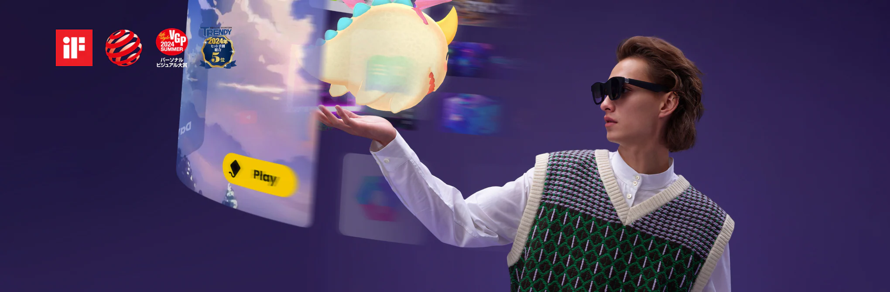
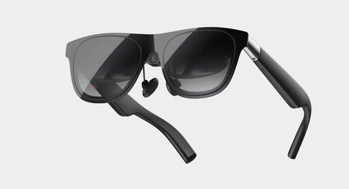
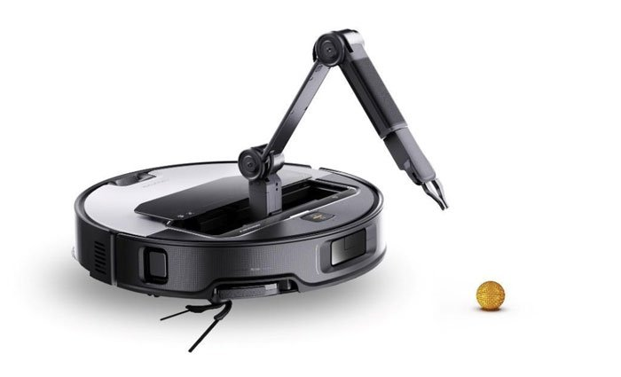

Presentación
Nuestro nuevo producto SmartGlasses X revoluciona la forma en que interactúas con el mundo.
Producto



Características
- Pantalla holográfica
- Control por voz
- Batería de larga duración
Precio: 299€
Vídeo del producto
Más detalles
Ver más información
Disponible en varios colores, resistente al agua y con inteligencia artificial integrada.
Testimonios
"Es el mejor gadget que he probado en años." - Cliente 1
"Muy cómodo y útil en el día a día." - Cliente 2